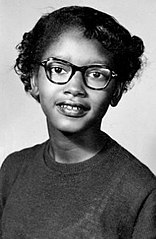

The biography of Claudette Colvin
Facts
Claudette Colvin was a civil rights activist and nurse aide (1969 to 2004)
Claudette Colvin was born in Montgomery, Alabama as Claudette Austin to Mary Jane Gadson and C.P. Austin.
Claudette Covin was born on September 5, 1939 (now age 83)
As of Febuary 7th 2023, Claudette Colvin is alive.
Claudette Colvin age 13; 20 April 1953. Credit: Wikipedia Commons
Early life
Claudette Colvin's parents are: Mary Jane Gadson, and C.P. Austin
When Austin abandoned the family, Gadson was unable to financially support the family, so Claudette and her younger sister Delphene were taken in by thier great aunt and uncle, Mary Anne and Q.P. Colvin.
Claudette and her sister refered to the Colvins as their parents.
2 days before Claudette's 13th birthday, her younger sister Delphene died of Polio.
Claudette went to the segregated Brooker T. Washington High School, and because her family didn't own a car, she relied on city transit to go to and from school.
Claudette was also a member of the NAACP youth council and was learning about the civil rights movement. Her mentor was Rosa Parks.
Civil rights activism
Bus incident
Claudette was the Civil rights activist who was the first black women (on record) to challenge bus segregation, and was part of the NAACP youth council.
Claudette Colvin's first stand for civil rights happened on March 2, 1955, when she was riding the bus home from school, sitting in the coloured section of a Capitol Heights bus, about 2 seats from the emergency exit.
If the white section became full enough that all the "white seats" were filled, then any nearby black passengers were supposed to get up from a nearby seat and make room for the white passengers.
When a white passenger was left standing in the front; the bus driver, Robert W. Cleere, asked Claudette and the three other black people in her row to get up and move to the back.
The other three moved, but another black women, Ruth Hamilton, who was pregnant, got on the bus and sat down next to Claudette.
The driver looked at the women in his mirror. "He asked us both to get up. [Mrs. Hamilton] said she was not going to get up and that she had paid her fare and that she didn't feel like standing," recalls Colvin. "So I told him I was not going to get up either. So he said, "If you are not going to get up, I will get a policeman."*
The police arrived and convinced a black man sitting behind the two women to move so that Ruth could move back, but Claudette still refused to move.
She was forcefully removed from the bus by two policemen, Thomas J. Ward and Paul Headley.
This happened 9 months before the better-known Rosa Parks incident.
Claudette later said, "My mother told me to be quiet about what I did. She told me to let Rosa be the one: white people aren't going to bother Rosa, they like her".
Colvin did not receive the same attention as Parks for a number of reasons: she did not have "good hair," she was not fair-skinned, she was a teenager, she was pregnant. The leaders in the Civil Rights Movement tried to keep up appearances and make the "most appealing" protesters the most seen.**
Annie Larkins Price, a classmate of Claudette recalled, "She had been yelling, "It's my constitutional right!" "She decided on that day that she wasn't going to move."**
Claudette Colvin was handcuffed, arrested, and forcibly removed from the bus. She shouted that her constitutional rights were being violated.
Claudette later said, "But I made a personal statement, too, one that [Parks] didn't make and probably couldn't have made. Mine was the first cry for justice, and a loud one."
The police took her to the station and made sexual comments about her body like guessing her bra size throughout the ride.
Browder v. Gayle
The second act of activism with Claudette Colvin was the time Claudette participated in a court case that ended bus segregation in the United States.
The result of the court case determined bus segregation as "Unconstitutional".
The participants of the court case included: Claudette Colvin, Aurelia S. Browder, Susie McDonald, Mary Louise Smith, and Jeanetta Reese, although Jeanetta Reese dropped out from the case later on.
The case, organized and filed in federal court by civil rights attorney Fred Gray, challenged city bus segregation in Montgomery as unconstitutional.
While participating in the court case, Claudette Colvin described her arrest: "I kept saying, 'He has no civil right... this is my constitutional right... you have no right to do this.' And I just kept blabbing things out, and I never stopped. That was worse than stealing, you know, talking back to a white person."
On December 20, 1956, the court ordered Montgomery and the state of Alabama to end bus segregation permanently.
*copied from Claudette Colvin - Wikipedia for clarity purposes
**copied from Claudette Colvin - Wikipedia for clarity purposes
***copied from Claudette Colvin - Wikipedia for clarity purposes
Significance
Claudette Colvin, a 15 year old girl in Montgomery, Alabama stood up to bus segregation on a capitol heights bus in 1955, resulting in her immediate arrest with charges of breaking segregation laws, disturbing the peace, and assaulting a police officer. (Although both Breaking segregation laws and disturbing the peace were dropped, assaulting a police officer was kept. Claudette Colvin never assaulted a police officer, based on her personal accounts.)
Prominence at the time
The news of Claudette's arrest was not very widespread at the time and almost nobody outside of Colvin's inner circle knew of the event. Although Claudette was part of the NAACP (N double-A CP) youth council, she wasn't a leader in civil rights because she had "Bad-Hair," wasn't fair-skinned, and was pregnant at the time.
Consequences
Magnitude: Claudette would go on to discribe her act as "a spark that caught on." The act of Rosa Parks 9 months later was supposedly caused by the NAACP needing someone to take Claudette's place in the civil rights movement, as Rosa Parks later said, "If they [The press] got ahold of [Colvin] they would've had a field day."
Scope: The consequences were not originally very widespread, but later Colvin would participate in a Court case that ended bus segregation.
Duration: The effects of Colvin's activism lead to the end of bus segregation in the court case known as Browder v. Gayle (1956), and the effects have lasted to this day.
Credits
Claudette Colvin - Twice toward justice Google Books
Claudette Colvin - Wikipedia
Browder v. Gayle - Wikipedia
Before Rosa Parks, There Was Claudette Colvin - NPR
Claudette Colvin: the woman who refused to give up her bus seat – nine months before Rosa Parks - The Guardian
And of course, to my friends, family and Caleb who helped motivate me and check my work! 😀